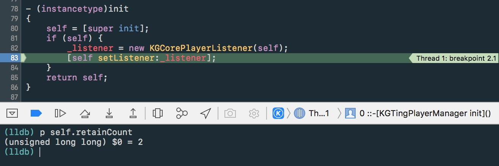
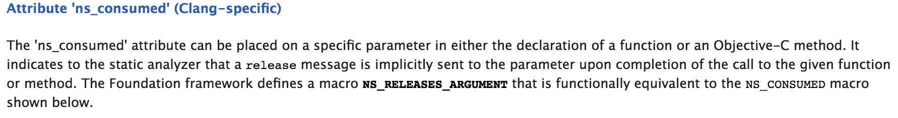
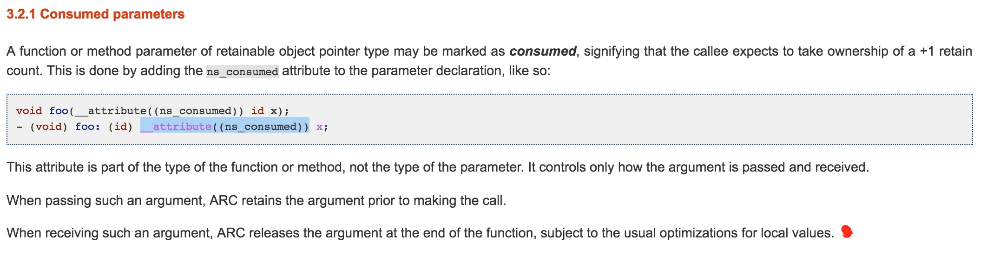
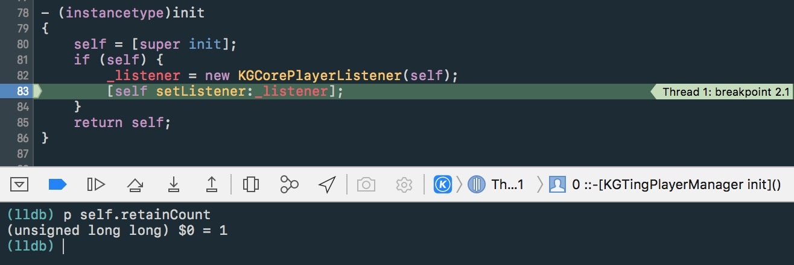

ARC 模式下，object-C 编写的代码的内存管理都交给了自动引用计数器了，不用我们自己再去操心内存的管理，但使用 Core Foundation 框架或者是和 C++ 混编时，代码的内存还是需要我们自己去管理的，这时候就需要注意了！
Core Foundation 主要是由不透明类型(opaque type)，即 C 结构体组成，语言层面并不支持继承和多态，而 Core Foundation能够制造出对象具有层次结构的假象是因为它的根“类” CFType 对象的指针 CFTypeRef 是 void * 类型的。
Core Foundation 内存管理方式：
- 如果创建或者复制对象，你就是所有者，比如以 create 或者 copy 开头的函数，那调用者就是返回对象的所有者。
- 如果没有创建或者复制对象，你不是所有者。这是如果不想让对象被销毁，就必须调用
CFRetain来成为所有者。 - 如果你是对象的所有者，就必须在用完对象后调用
CFRelease。
C++ 和 object-C 混编时，C++ 代码的内存管理方式和 Core Foundation 类似，在使用完 C++ 对象后，必须先 delete 掉该对象，然后置为 NULL 。
先来看一段代码：
1 | - (instancetype)init |
在 init 函数里面调用了 C++ 函数，并把 self 作为形参传递过去，执行完函数后发现 self 的计数器变为 2 了！很奇怪，断点看了一下

查看了 1 的实现，发现函数将传过去的 self 给 capture 了。查阅了资料，发现了这个
然后就以为在 init 方法族里面，将 self 作为参数传递给其他函数使用的都会导致 return a retained object ，后来我发现我错了！
- 错误1：并不是将 self 作为形参传递给其他类就会导致计数器 +1，除非接收类 capture 了 self 才会导致 retainCount +1；不 capture 的话是不会 +1 的。
1 | KGCorePlayerListener::KGCorePlayerListener( id<KGCorePlayerListenerProtocol> manager) |
- 错误2：当把 self 作为参数传递时并不是只在 init 方法族里面才会导致计数器 +1，其他方法也一样会。
针对以上出现的问题，当你想销毁该实例时（以 KGTingPlayerManager 为例），简单的将 _tingPlayerManager = nil 是并不会导致调用到 dealloc 方法，置为 nil 后计数器变为 1 。
解决办法的思路无非就是将 retainCount 降到 0
方法一:
先释放掉之前被 capture 的 self ，最后再将 _tingPlayerManager 置为 nil ，最传统也是最实用的方法，本来的写法也应该是这样的。
1 | -(void)destroy { |
方法二：
利用 Clang 的编译属性 __attribute((ns_consumed)) 关于这个属性的介绍看下面


所以在定义函数或者方法时，可以为该函数的参数指定 __attribute((ns_consumed)) 属性，静态分析器会在函数调用结束的时候发送一个 relese 消息，所以在返回给调用者的时候计数器并不会 + 1 。
有一点需要特别注意的是，它是有按照 passing an argument 还是 receiving an argument 来分别对计数器进行操作的。
修改代码如下：
1 | KGCorePlayerListener::KGCorePlayerListener( id<KGCorePlayerListenerProtocol> __attribute((ns_consumed)) manager) |
然后再测试一下，发现 retainCount 并没有变为 2 。

When receiving such an argument, ARC releases the argument at the end of the function, subject to the usual optimizations for local values.
关于 __attribute((ns_consumed)) 这个属性，详细的参考 consumed-parameters 和 Attribute ‘ns_consumed’ 。
使用这个属性还要考虑到 ARC 和非 ARC 下是否会有内存泄露的问题，Example
Important note when using Garbage Collection: Note that the analyzer essentially ignores this attribute when code is compiled to use Objective-C garbage collection. This is because the release message does nothing when using GC. If the underlying function/method uses something like CFRelease to decrement the reference count, consider using the cf_consumed attribute instead.
关于内存管理部分，Clang 定义了很多编译属性，如：
#define NS_RETURNS_RETAINED attribute((ns_returns_retained))
#define NS_RETURNS_NOT_RETAINED attribute((ns_returns_not_retained))
#define NS_RETURNS_INNER_POINTER attribute((objc_returns_inner_pointer))
更多的可以参照 NSObjCRuntime.h 头文件的定义。鉴于平时编码也很少需要用到 Clang 的编译属性，所以除非特殊情况，否则还是不要随便使用 Clang 的编译属性为好。
参考链接：
拓展链接：